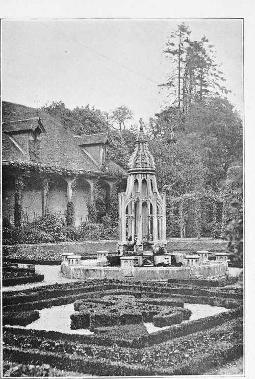
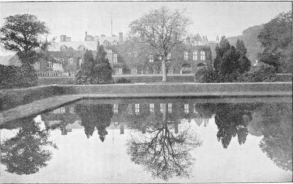

Expenses, Rents Repaid To Various Churches, Etc
Description
This section is from the book "A History Of Gardening In England", by Alicia Amherst. Also available from Amazon: A History Of Gardening In England.
Expenses, Rents Repaid To Various Churches, Etc
Costs of the Vineyard and Curtilage and in divers labourers and women for digging the vines and curtilage, and also for cleansing and pulling up weeds in the curtilage, as appears by the parcels sewn to this account, 69s. 1 1/2d., and in thorns bought, viz. 4 cartloads of thorns for making the hedges round the great garden, 6s. 8d., and in the stipends of 2 men making 6 score and 1 perches of hedges round the same garden, 35s- 3 1/2d., by the perch, 3 1/2d. 111s. 1d.
Costs of repairs, etc. :—
Wages Of The Bailiff
In the wages of the accountant for 35 weeks and 6 days, 62s. 9d., taking by the day, 3d. In the wages of 1 boy digging in the vineyard, and in the curtilage from the last day of December until 17th day of April, in the feast of Easter, for 106 days, 17s. 8d., taking by the day, 2d. In the stipend of the same boy for the same time, 5s. And in the stipend of the accountant for the half-year, 13s. 4d.—Sum, £14. 18s. 9d.
Small Expenses
Paid to the Rector of the Church of St. Andrew, in Holbourne for the tithe of the pasture of the great garden, 4s. 10d. Sum of all the expenses, £15. 12s. 6 1/2d. Afterwards there is allowed to the same [accountant] 21s. 6 3/4d., which he paid to Sir Walter de Aldebury, Prebendary of the Prebend of Holbourne, for the rent of the vineyard of the Prior of Ely for 6 years and for one quarter of a year last past, viz. 3s. 5 1/2d. by the year, viz. for the whole time during which the Lord Bishop held the said vineyard of the Prior at farm, and there is allowed to the same 9s. 4d. for his stipend from the day of the death of the Lord until the feast of Michael for 16 weeks taking by the week 7d. for the custody of the said vineyards and the pasture aforesaid.—And so the sum of both surpluses is 60s. 3 1/4d., which he received of Sir Roger Beauchamp.—And so he departed content.
(On The Dorse) Verjuice
The same answers for 30 gallons of verjuice of the issues of the vineyard—sum. 30 gallons—thereof in tithe 3 gallons —And for one peck of parsley seed (" seminis petrosilli "), and for one quart hyssop (" ysop ") seed—And for 1 quart savoury (" savori ") seed, and for 1 quart leek (" lekes ") seed. Dead Stock—There remain there two iron spades ("vange ferree"), 1 rake ("tribul"), 4 hoes ("howes"), and 1 lamp (lucerna), 1 "shave," 1 axe ("bolex"), 1 box for candles, 1 box for spices, the latter broken.
The Bishop of Ely's Holbourne vineyard did not stand alone in that locality. Hard by was another belonging to the Earl of Lincoln, from which about fifty gallons of verjuice were sold in one year (1295-6).* A little further on, in Smithfield, a vineyard was planted by Geoffrey, Earl of Essex, on the land belonging to the " Canons of Trinity Church, London," which was restored to that body in 1137.†
It would be tedious to enumerate all the vineyards belonging to monastic houses which are known to have existed, and of which there is merely the name or some slight record surviving, as at Canterbury, Beaulieu, Ramsey, Abingdon, Spalding, Bury St. Edmunds, and many others.‡ Enough has been told to show how important an item the vineyard was in the gardener's department. His cares,, however, did not quite end there ; as the moat and the ponds were also under his charge.§ At Norwich the gardener's office bore the expense of cleaning the ditches which divided the various gardens, the Prior's from the chief garden, and so on.|| At Abingdon we find also he defrayed the cost of cleaning out the moat, and both there and at Ramsey the gardener purchased nets and baskets for catching the fish in the moat and ponds.|||
To get at the details of the management of monastic gardens, we have to go so constantly to the accounts of the office, and to look solely at the business side of the question, that one is apt to forget the other aspect, namely, the pleasure they afforded. But, alas! there are few gardens in existence which can give any idea of what these were really like. A thick hedge or a fish pond is generally the only survival. The wall enclosing a corner of the garden at Ashridge is part of the old cloister, and near it there is also a thick yew hedge surrounding another small piece of garden. These, if not actually the same as in the days when the place was a monastery, are on the same lines, and have been kept as gardens ever since the days when the monks enjoyed the solitude of the cloister. The times we have been considering were periods of constant strife, when the cloister was the only place in which quiet and retirement could be found, and to those who sought refuge within its walls, how dear must those peaceful hours in their gardens have been. Perhaps some inmate of Sopwell (a cell of St. Albans) was too fond of early morning or late evening strolls in the garden, for Abbot Michael (about 1338) made the rule that in winter "the garden-door be not opened (for walking) before the hour of prime, or first hour of devotion :—and in summer that the garden and the parlour doors be not opened until the hour of none (? nine) in the morning :—and to be always shut when the corfue rings." *
* Duchy of Lancaster account. Bundle 1. No. 1. † Syllabus of Rymers Fœdera. Vol. L, p. 3.
‡ The total cost of the vintage one year at Abingdon was 4s. 4d. In 1388-9 the profits from the vineyard were—"from wine, 13s. 4d., from'grapes, 20s. 0 1/2d.,from verjuice, 2S., from vines, 4d."—Accounts of Abingdon Abbey, by R. E. G. Kirk.
§ See plan on page 13.
|| 1483-4. " For cleaning the great ditch that goes round the garden with the small ditch which is next the ' scaccarium ' (= exchequer) of the gardener, 18d." (There is an entry, 1516, "for making a window of glass in the 'scaccarium,' 2od.")
||| Abingdon, 1450-1 : Et in welez emptis pro piscibus capiendis in fossato conventus 4s. 10d. et in factura unius tronke pro piscibus custodiendis 3d.
ASHRIDGE.
Even the warlike Hospitaller Orders, the Templars and Knights of St. John, contributed something towards the improvement of Horticulture. In their wanderings in the East during the Crusades, they may have remembered some garden in England, and brought back plants for it, as, for example, the splendid Oriental plane at Ribston, the planting of which tradition attributes to the Templars. The surveys of the manors all over the kingdom belonging to these Orders show the large number of gardens of which they were possessed. At the Chancery of the Order of St. John of Jerusalem in England, in Clerkenwell, there was a garden in the time of Prior Philip de Thame (in 1338) which was still existing in the reign of Henry VII.,† and the Hospitallers had also a house with gardens attached at Hampton, on the site of the present gardens of Hampton Court.‡ In many ways through those troublous times the monastic orders kept alive the science of Horticulture, and spread the knowledge of it to those around them. Thus by practising, as well as by preaching, they showed by their useful lives that "to labour was to pray".
* Rev. Peter Newcome, History of St. Albans, p. 468. † Close Roll, Henry VII., a.d. 1486.
‡ The Knights of St. John of Jerusalem and the Templars, also the Cistercians, were exempted from payment of the tithe of the gardens.—Fuller, Church History.
The eagle or mirror pond, newstead abbey.
So named from the clearness of the reflections, and from a brass eagle lecturn containing the papers of the monastery having been found there in the 18th century. The size of the pond is 212 feet long by 104 feet wide. There is a flight of stone steps descending into the water at each corner. (See page 87).
Continue to: